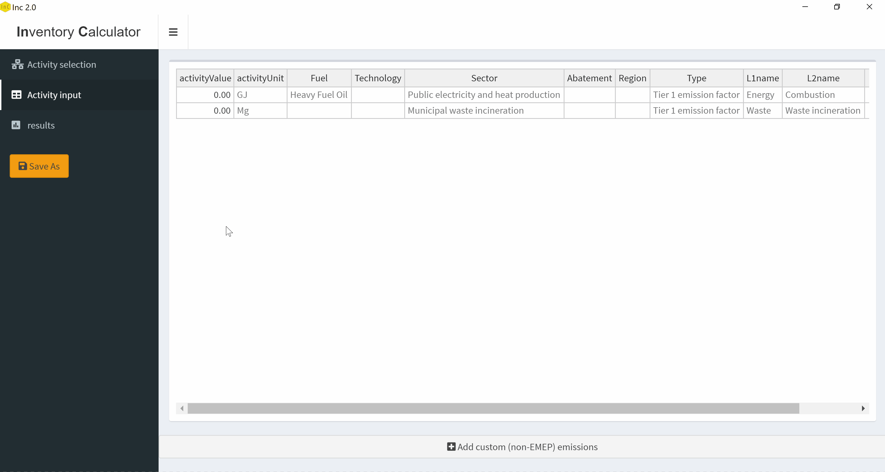
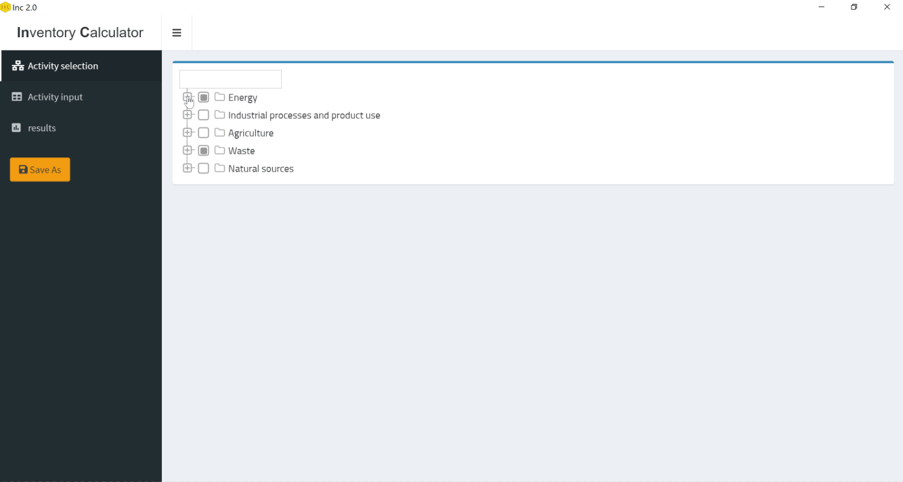

Table of Contents
The increased levels of pollutants in the atmosphere are of growing concern due to their detrimental effect on human health, agriculture and natural ecosystems Action to limit air pollution is consistent with Sustainable Development Goals that states that air pollution, both ambient and household, increases the risk of cardiovascular and respiratory disease and, in 2016, led to some 7 million deaths worldwide (WHO, 2016).
Source Apportionment is the practice of deriving information about pollution sources and the amount they contribute to ambient air pollution levels. Different approaches are used to determine and quantify the impacts of air pollution sources on air quality. Emission inventories are commonly used Source Apportionment techniques. They are detailed compilations of emissions from all source categories in a certain geographical area and within a specific year. Emissions are estimated by multiplying the intensity of each relevant activity (activity rate) by a pollutant-dependent proportionality constant (emission factor). Dispersion models taking emission inventories as input, such as Lagrangian models, Gaussian plume models, and Eulerian models are also applied for source identification purposes.
Good quality emission inventories are the foundation on which optimized emission prevention and control strategies can be developed at different scales. Regional issues such as tropospheric Ozone formation and increasing atmospheric loads of PMs (especially those less than 2.5 µm in diameter) also require high quality emission inventories in order to develop regionally coordinated abatement strategies.
Therefore, to achieve mutual goals and to protect public health and the environment, additional efforts to assess air quality are needed. Without detailed and reliable emission inventories, there is little opportunity to develop strategic plans of how to deal regionally, nationally, or locally with air pollution problems and to monitor the effect of such plans. In Europe and North America there is official national reporting of emission inventories for a number of pollutants to the Convention on Long-Range Transboundary Air Pollution. However, in the many countries, routine calculation of emission estimates is absent and the capacity to undertake the necessary calculations is generally lacking.
This application is based on the most updated emission factors published in 2019 under the European Environment Agency (EEA) joint European Monitoring and Evaluation Program (EMEP) air pollutant emission inventory guidebook. The 2019 EMEP/EEA guidebook (European Environment Agency, 2019) compiles 10727 Tier1 and Tier2 emission factors, abatement efficiencies, and fuel consumption figures from 429 distinct references including the United States Environmental Protection Agency, the Intergovernmental Panel on Climate Change, and various peer reviewed publications. The EMEP/EEA guidebook provides a methodology for compiling inventories and default emission factors.
The emission Inventory Calculator (InC) helps users prepare national emission inventories. The embedded data related to the emission factors and abatement efficiencies in InC were extracted from the EMEP/EEA Guidebook 2019.
Users first need to select the activities they plan to include in the national inventory and then input the associated activity rates. InC will perform all necessary calculations to give the user the sought emission inventory which can then be exported as an excel document. InC offers flexible visualizations of the the results with the ability to filter and facet the data in several ways.
Use the “Activity Selection” tab to determine the activities for which the emission inventory calculation is to be conducted. Select the activities that will be included in the calculation of the emission inventory. Nested in the tree are these 8 layers
Source sector: the 5 main emission sources: Energy, Industrial processes and product use, Agriculture,
Waste, Natural sources, which are the broad emission sources
Emission factor Tier: Tier1 or Tier2 factors, depending on data availability
Source sub-sector: sub-sectors under each of the 5 main emission sources
Sector: Activities under each subsector for the emission tier selected
Technology: Specific technologies available for the Sector selected
Fuel: Fuel options for the selected technology
Abatement: Abatement options for the selected Fuel
Region: Regions available for the selected Abatement
Add the activity values for the activities you selected in the "Activity selection" tab. The results are automatically computed and displayed in the "results" tab.

You can add emissions calculated in methodologies other than EMEP to the to the inventory. You first need to select the corresponding activities from the "Activity selection" tab. Then in the "Activity input" tab, leave the activity value as zero and click on "Add custom (non-EMEP) emissions". This will take you to a page where you can input the emissions for the pollutants you select.
Your additional emissions will show in the "results" tab, where you can export them using the "Export results" button. 
Distributed under the CC0-1.0 License License. See LICENSE for more information.
Anwar Al Shami - anwar.alshami@alesopi.com
Project Link: https://github.com/anwaralshami/InC